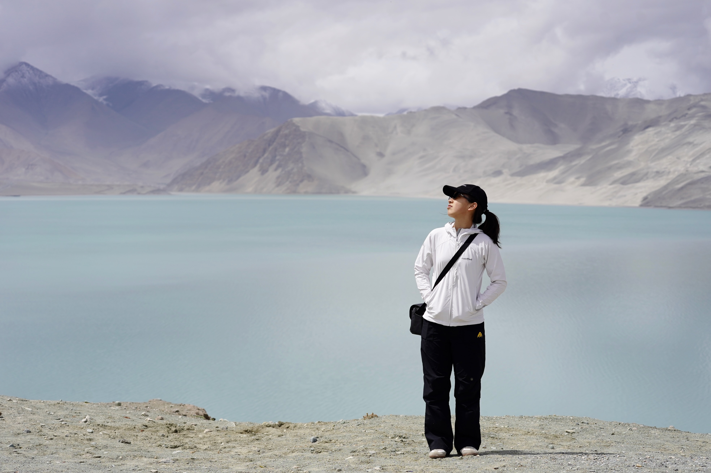
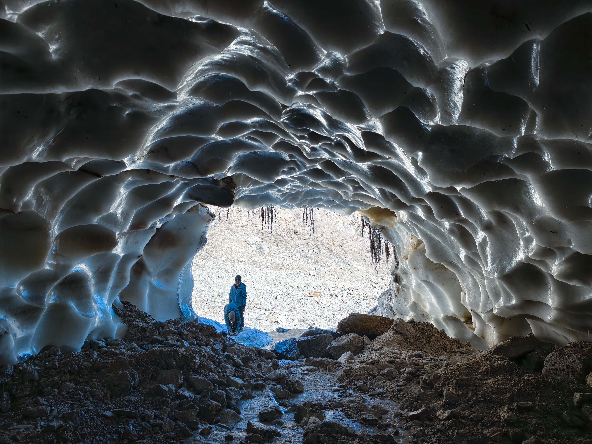
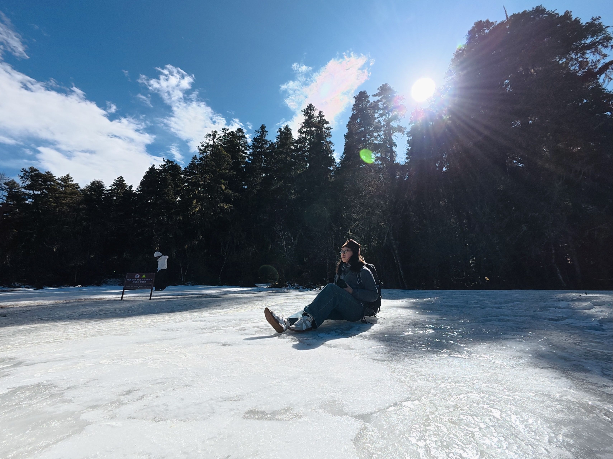

Beyond the Desk
Misc
Outside the office, I spend much of my time moving through landscapes that require more than a laptop. I jog, hike, climb, and trail-run — drawn to the kind of terrain where elevation and effort are the only metrics that matter. Some of the places I have been lucky enough to reach: Yubeng Village beneath the Meili Snow Mountain, the length of Tiger Leaping Gorge, the old streets of Kashgar, and all ten sections of the MacLehose Trail across Hong Kong. Feel free to reach out if you share the same impulse to just start walking.

Baisha Lake
Kashgar · Xinjiang

Muztagh Ata
Xinjiang · 4,688 m

MacLehose Trail
Hong Kong · Section 4

Po Pin Chau
Hong Kong · Sai Kung

Ice Cave
Yunnan · Sacred Waterfall Trail

Yubeng Village
Yunnan · On the trail

Yubeng Village
Yunnan · Meili Snow Mountain

Potatso National Park
Yunnan · Shangri-La
Trails Walked
Pins mark where I’ve been; lines trace the routes I walked. Scroll-zoom is off — drag to pan, use the + / − buttons to zoom.